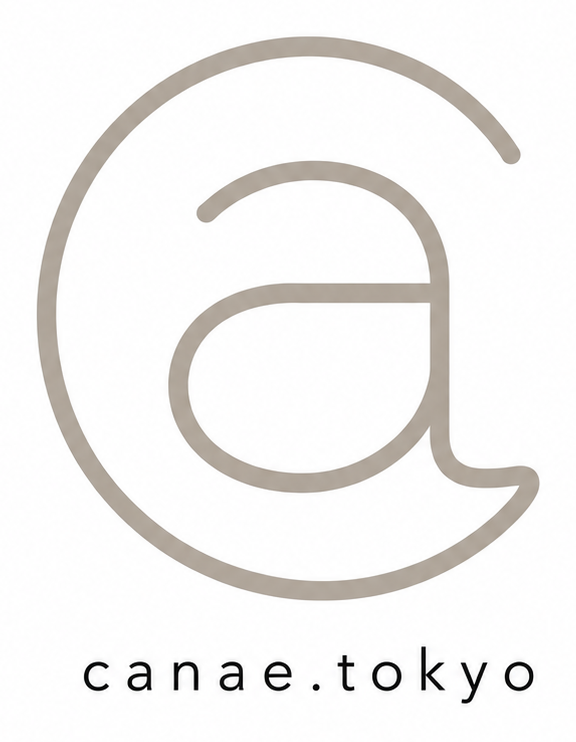
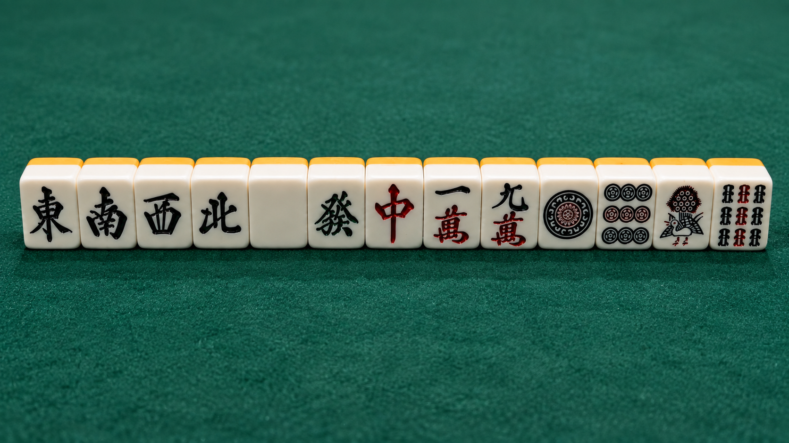
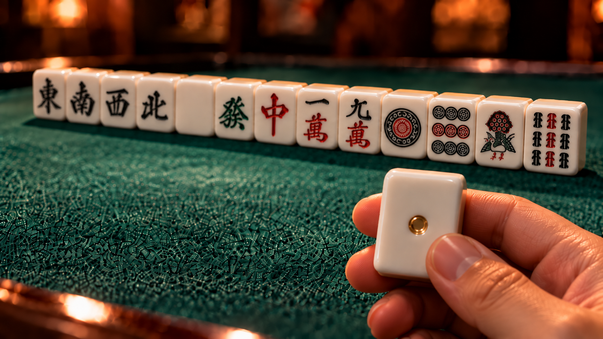

準備
仕事では、動き出してから考えるのではなく、先に選択肢を増やしておく。機会が来た瞬間に動ける状態まで整える。

配牌は選べない
待ちは自分で創る
麻雀の一局に重ねた
大森 泰の仕事観と人生観

麻雀は、大森 泰の考え方を伝えるための比喩です。仕事も人生も、最初から理想の条件が揃うとは限らない。だからこそ、与えられた状況を読み、選択肢を増やし、機が来るまで準備を続ける。最後に結果を変える一手を掴めるかどうかは、運だけではなく、そこまでの構え方にあると考えています。
国士無双の十三面待ちは、十三種類のどの牌でも和了できる状態です。ここで重ねているのは役そのものではなく、可能性を広げた上で、静かに機を待つ姿勢。仕事でも、選択肢を一つに決めつけず、複数の可能性を用意し、状況が動いた瞬間に迷わず動ける状態をつくる。その考え方を、十三面待ちという麻雀のロマンで表現しています。

仕事では、動き出してから考えるのではなく、先に選択肢を増やしておく。機会が来た瞬間に動ける状態まで整える。
結果がすぐに出ない時間にも意味がある。焦って手を崩さず、状況を読みながら必要な一手を待ち続ける。
好機は準備した人にしか活かせない。流れが変わる一手が来たとき、迷わず掴み切ることを大切にする。
国士無双十三面待ちから
リーチ一発ツモ白ポッチ和了 約 1.7兆分の1
これは「奇跡が起きるまで待つ」という仕事観ではありません。準備と判断を語った上で、最後に残す大森らしい遊び心です。
子の配牌13枚が国士無双の十三面待ちとなり、1巡目では和了せずリーチ。その次の一発ツモで、白4枚のうち唯一の白ポッチを引き当てる。特定の前提条件で積み上げると、その概算確率は約5.9×10⁻¹³。仕事や人生の成功確率を示す数字ではなく、麻雀という比喩の奥にあるロマンとして添えています。
選べないものがあっても
次の一手は、自分で選べる